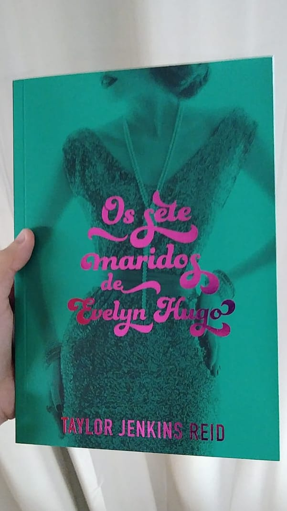
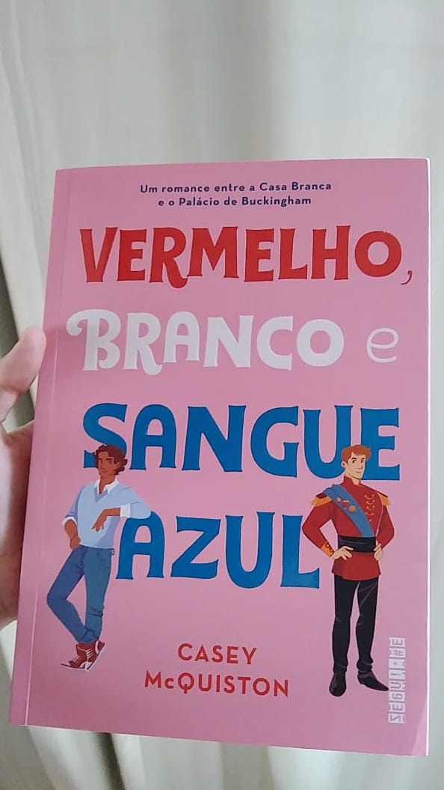

Livros com representatividade LGBTQIA+
Lista de Livros
 |
Me Chame Pelo Seu NomeA casa onde Elio passa os verões é um verdadeiro paraíso na costa italiana, parada certa de amigos, vizinhos, artistas e intelectuais de todos os lugares. Filho de um importante professor universitário, o jovem está bastante acostumado à rotina de, a cada verão, hospedar por seis semanas na villa da família um novo escritor que, em troca da boa acolhida, ajuda seu pai com correspondências e papeladas. Uma cobiçada residência literária que já atraiu muitos nomes, mas nenhum deles como Oliver.
Autor: André AcimanClique aqui para ler a resenha completa |
Minha Versão de VocêHá três anos a família de Tanner Scott se mudou da Califórnia para Utah, fazendo com que sua bissexualidade voltasse para o armário. Agora, com apenas mais um semestre até o fim das aulas no colegial e seu tão sonhado futuro em uma universidade longe da família, ele só deseja que o tempo passe mais depressa. Quando Autumn, sua melhor amiga, se inscreve na aula de escrita e o desafia a participar, Tanner não consegue recusar o convite, afinal de contas, quatro meses é tempo mais do que suficiente para escrever um livro, certo? O garoto está mais certo do que imagina, pois leva apenas um segundo para que ele note Sebastian Brother, o prodígio mórmon que, nas aulas de escrita do ano anterior, escreveu e publicou o próprio livro, e agora orienta a turma. Se quatro meses é muito tempo, um mês pode não ser. E é exatamente esse tempo que leva para Tanner se apaixonar por Sebastian. Autora: Christina LaurenClique aqui para ler a resenha completa |
Tipo Uma história de AmorÉ 1989 na cidade de Nova York e, para três adolescentes, o mundo está mudando. Reza é um garoto iraniano que acaba de se mudar para a cidade com sua mãe para morar com seu padrasto e meio-irmão. Ele tem pavor de que alguém adivinhe a verdade que mal reconhece sobre si mesmo. Reza sabe que é gay, mas tudo o que sabe da vida gay são as imagens da mídia de homens morrendo de Aids. Judy é uma aspirante a estilista que adora seu tio Stephen, um homem gay com AIDS que dedica seu tempo ao ativismo como membro do ACT UP. Judy nunca imaginou encontrar romance... Até que ela se apaixona por Reza e eles começaram a namorar. Art é o melhor amigo de Judy, o único adolescente orgulhoso de ter se assumido para o mundo. Ele nunca será quem seus pais conservadores querem que seja, então se rebela documentando a crise da Aids por meio de suas fotografias. À medida que Reza e Art se aproximam, Reza luta para encontrar uma maneira de escapar da mentira para não quebrar o coração de Judy - e destruir a amizade mais significativa que ele já teve. Autor: Abdi NazemianClique aqui para ler a resenha completa |
Os Dois Morrem No FinalNo dia 5 de setembro, pouco depois da meia-noite, Mateo Torrez e Rufus Emeterio recebem uma ligação da Central da Morte. A notícia é devastadora: eles vão morrer naquele mesmo dia. Os dois não se conhecem, mas, por motivos diferentes, estão à procura de um amigo com quem compartilhar os últimos momentos, uma conexão verdadeira que ajude a diminuir um pouco a angústia e a solidão que sentem. Por sorte, existe um aplicativo para isso, e é graças a ele que Rufus e Mateo vão se encontrar para uma última grande aventura: viver uma vida inteira em um único dia. Uma história sensível e emocionante, Os Dois Morrem no Final nos lembra o que significa estar vivo. Com seu olhar único, Adam Silvera mostra que cada segundo importa, e mesmo que não haja vida sem morte, nem amor sem perda, tudo pode mudar em 24 horas. Autor: Adam SilveraClique aqui para ler a resenha completa |
|  |
Os Sete Maridos de Evelyn HugoLendária estrela de Hollywood, Evelyn Hugo sempre esteve sob os holofotes – seja estrelando uma produção vencedora do Oscar, protagonizando algum escândalo ou aparecendo com um novo marido... pela sétima vez. Agora, prestes a completar oitenta anos e reclusa em seu apartamento no Upper East Side, a famigerada atriz decide contar a própria história – ou sua "verdadeira história" –, mas com uma condição: que Monique Grant, jornalista iniciante e até então desconhecida, seja a entrevistadora. Ao embarcar nessa misteriosa empreitada, a jovem repórter começa a se dar conta de que nada é por acaso – e que suas trajetórias podem estar profunda e irreversivelmente conectadas. Autora: Taylor Jenkins ReidClique aqui para ler a resenha completa |
Um Milhão de Finais FelizesJonas não sabe muito bem o que fazer da vida. Entre suas leituras e ideias para livros anotadas em um caderninho de bolso, ele precisa dar conta de seus turnos no Rocket Café e ainda lidar com o conservadorismo de seus pais, sua mãe alimenta a esperança de que ele volte a frequentar a igreja, e seu pai não faz muito por ele além de trazer problemas. Mas é quando ele conhece Arthur, um belo garoto de barba ruiva, que Jonas passa a questionar por quanto tempo conseguirá viver sob as expectativas de seus pais, fingindo ser uma pessoa diferente de quem é de verdade. Buscando conforto em seus amigos (e na sua história sobre dois piratas bonitões que se parecem muito com ele e Arthur), Jonas entenderá o verdadeiro significado de família e amizade, e descobrirá o poder de uma boa história. Autor: Vitor MartinsClique aqui para ler a resenha completa |
|  |
Vermelho, Branco e Sangue AzulQuando sua mãe foi eleita presidenta dos Estados Unidos, Alex Claremont-Diaz se tornou o novo queridinho da mídia norte-americana. Bonito, carismático e com personalidade forte, Alex tem tudo para seguir os passos de seus pais e conquistar uma carreira na política, como tanto deseja. Mas quando sua família é convidada para o casamento real do príncipe britânico Philip, Alex tem que encarar o seu primeiro desafio diplomático: lidar com Henry, irmão mais novo de Philip, o príncipe mais adorado do mundo, com quem ele é constantemente comparado ― e que ele não suporta. O encontro entre os dois sai pior do que o esperado, e no dia seguinte todos os jornais do mundo estampam fotos de Alex e Henry caídos em cima do bolo real, insinuando uma briga séria entre os dois. Para evitar um desastre diplomático, eles passam um fim de semana fingindo ser melhores amigos e não demora para que essa relação evolua para algo que nenhum dos dois poderia imaginar ― e que não tem nenhuma chance de dar certo. Ou tem? Autora: Casey McQuistonClique aqui para ler a resenha completa |